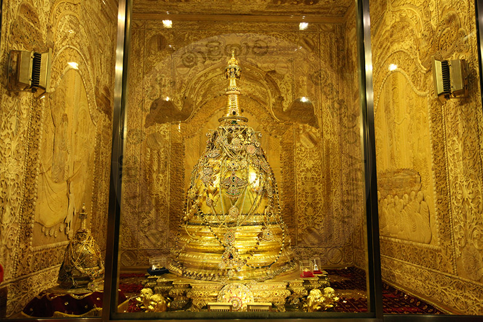

Kandy is one of the most scenic cities in Sri Lanka and lies in the midst of hills. It is the Capital of the Central Province. It is both an administrative ad religious city. Kandy is the second largest city in the country and is frequently visited by Buddhists especially of the Theravada School. Kandy is very famous among tourist for three main reasons: It is home to the sacred tooth relic of the Buddha (Temple of the Sacred Tooth Relic ; Dalada Maligawa ), The Botanical Gardens ( Located in Peradeniya) and it always has a special place when it comes to festivities such as the Esala Perahara.
Tooth Relic
EThe Temple of the Tooth relic is the place that houses the Relic of the tooth of the Buddha. Originally part of the Royal Palace complex of the Kandyan Kingdom, it is one of the holiest places of worship and pilgrimage for Buddhist around the world. The Palace of the Tooth relic, the palace complex and the holy city of Kandy are associated with the history of the dissemination of Buddhism. The temple is the product of the last peregrination of the relic of the tooth of Buddha and the testimony of a religion which continues to be practiced today.
Parks and Gardens
The Royal Botanical Garden is the largest botanical garden in the whole island providing residence to over a large variety of plants, some even hundreds of years old.
Festivals (annual pageant)
Kandy as stated earlier is also very popular due to the annual pageant known as the Esala Perahera, in which one of the inner caskets used for covering the tooth relic of Buddha is taken in a grand procession through the streets of the city. This casket is taken on a royal tusker. The procession includes traditional dancers and drummers, flag bearers of the provinces of the old Kandyan kingdom, the Nilames wearing their traditional dresses, torch bearers and also the grandly attired elephant. This ceremony which is annually held in the months of July or August attracts large crowds from all parts of the country and also many foreign tourists.
Kandy is must for anyone's itinerary when visiting Sri Lanka. It is considered one of the most beautiful places in Sri Lanka which at the same time show cases the Sri Lankan Culture at its highest level.
| Information | Map |
|---|---|
|
 |

Laktavelling.lk helps to make your travel. While using this site, you agree to have read and accepted our terms of use, cookie and privacy policy.
Copyright © 2019 Laktravelling.lk All Rights Reserved.